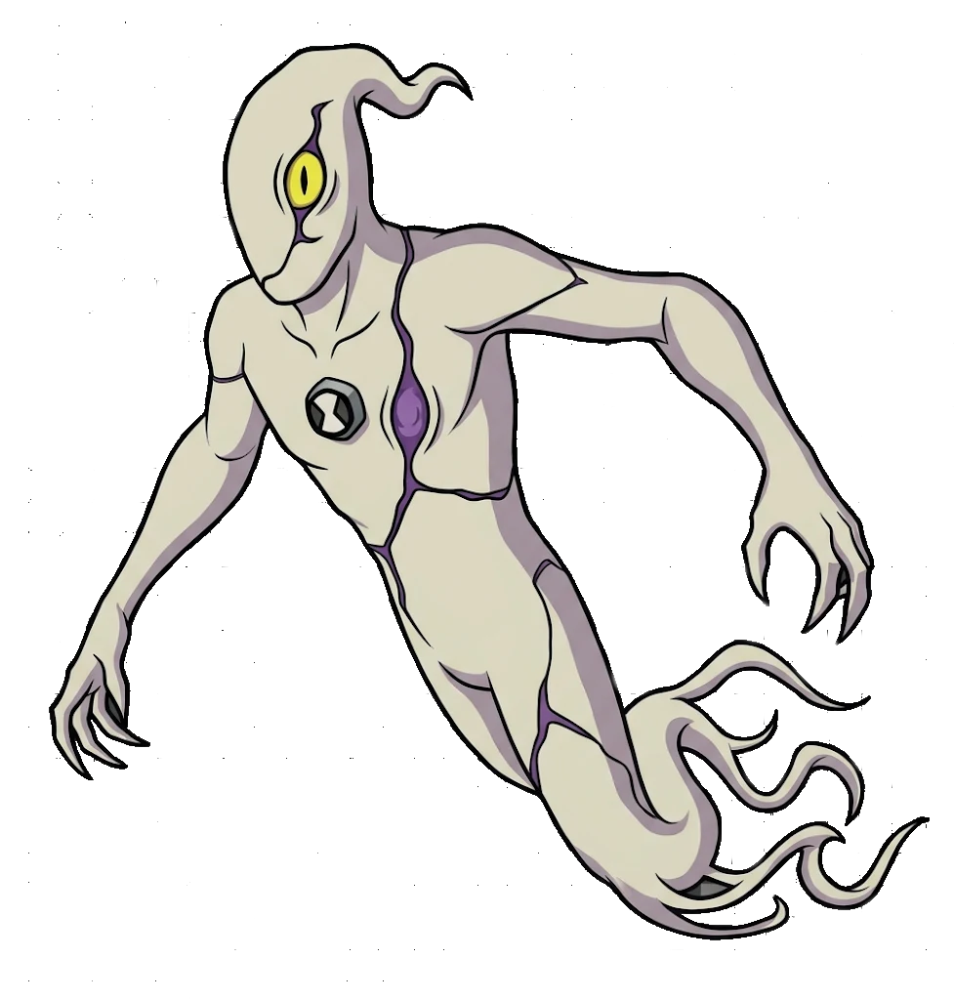

FANTASMÁTICO
- Espécie: Ectonurita
- Planeta: Anur Phaetos
- Habilidade: Intangibilidade e Invisibilidade
- Elemento: Sombra / Ectoplasma
- Aparição: Episódio 04
- Status: Ativo (Comum)
← Voltar para a Coleção
FANTASMÁTICO
"Parece que alguém viu um fantasma..."
Visão Geral
Fantasmático é a amostra de DNA de um Ectonurita do planeta sombrio Anur Phaetos. Com uma aparência espectral e assustadora, possui um único olho roxo que percorre trilhos escuros pelo seu corpo e tentáculos ocultos sob sua pele protetora.
Habilidades e Poderes
É capaz de levitar, ficar completamente invisível e atravessar objetos sólidos através da intangibilidade. Também pode possuir o corpo de outros seres, disparar raios de energia de seu peito quando exposto e sobreviver no vácuo do espaço.